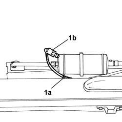

5040B20 DIPPRD BEAM (1), LH OR RH - R R
- Path
- Procedures > 50 AUXILIARY UNITS > 5040 AIR CONDITIONING CASING AND COMPONENTS > 5040B SYSTEM SAFETY CHECK DEVICES > 5040B20 DIPPRD BEAM (1), LH OR RH - R R
- Kind
- repair procedure (removal / refitting; the operation number is the code)
- Applies to
- all engines; all production periods
- Interactive page
- https://sloeber94.github.io/elrnDB-fDct/en/#/244001283
Applies to: all engines; all production periods
 Removing
Removing
 Refitting
Refitting- Disconnect the negative battery terminal.
Op. 5040A47 AIR CONDITIONING CONDENSATOR LID - R.R.
1. Disconnect the electrical connection (1a) and undo and remove the linear pressure transducer (1b).

Applies to: all engines; all production periods; only with equipment: Supplementary air conditioner
Refitting
Removing- Tighten the transducer in the special housing.
- Connect the electrical connector for the transducer.
Op. 5040A47 AIR CONDITIONING CONDENSATOR LID - R.R.
- Connect the negative battery terminal.